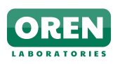

<div class="container p-4 my-4">
        <div class="row">
            <div class="col-md-6 text-left align-left">
                <h4 class="text-muted  border-bottom mb-2">
                    Background
                </h4>
              <!--   <h4 class="display-4 text-center font-weight-normal">Have what it takes to join Us?</h4>
                <p class="text-muted text-center">
                  
                </p>
              <div class="media shadow-sm">
                  <div class="media-left">
                      
                  </div>
                  <div class="media-body">
                      <div class="card-header">G. Matyila (Sample Projects)</div>
                      <div class="card-text p-2 text-sm">
                          <a href="https://www.amazon.com/GooMatyi-Buy-More/dp/B07RQ128NB/ref=sr_1_4?keywords=goomatyi&qid=1565313535&s=gateway&sr=8-4" class="btn btn-block btn-secondary btn-sm">Buy More Android App </a>
                          <a href="https://www.facebook.com/buymoreapp/"  class="btn btn-block btn-secondary btn-sm">Facebook App Page </a>
                          <a href="https://www.linkedin.com/in/goodwish-matyila-441a19180/"  class="btn btn-block btn-secondary btn-sm">LinkedIn Profile </a>
                          <a href="https://github.com/MatyilaGoodwish?tab=repositories"  class="btn btn-block btn-secondary btn-sm">Github Projects</a>
                          <a href="https://apk.support/developer/BD+Group+(Pty)+Ltd"  class="btn btn-block btn-warning btn-sm">Sample App Projects</a>                               
                      </div>
                  </div>
              </div>

                -->
               <p class="text-muted text-left">
                "OREN LABORATORIES" is a registered trademark of "BD GROUP", South Africa
                 its main focus is to help build solutions with the usage of the "ANGULARJS" the registered trademark for "GOOGLE LLC" in order to solve business challenges.
                 "OREN LABORATORIES" create usable prototypes in order to define the business requirements of the user interactions with the client-side facing applications.
                </p>
                <h4 class="text-muted  border-bottom mb-2">
                    Core Values
                </h4>
                <p class="text-muted text-left">
                  Applications that are build with "ANGULARJS" perform fast and are structured well, They can also be designed by team very easily while the learning curve may be quiet complex for the average JavaScript programmers at first but to compensate for this "GOOGLE LLC" engineers on the "ANGULARJS" team provide all the support needed to get started with using the "ANGULARJS" framework quickly.    </p>
           
                <p class="text-muted text-left">
                  We have chosen "ANGULARJS" as our framework of choice for development of complex single page applications(SPA) also for the reasons beyond the capabilities of the "ANGULARJS" framework itself, We dive deep into the business requirements documentation(BRD) in order to collect enough data for "Business functional requirements".               
                  "OREN LABORATORIES" has strong belief that business challenges can have equal solutions or even better when the right tools are properly implemented or directed to this single purpose which initially is to ease the business transformation to the whole new era in the technology domain.
                </p>
                </div>
            <div class="col-md-6 text-center text-muted">
                  
                  <div class="display-4">{{title}}</div>
                  <p class="lead text-muted">
                    {{subtitle}}
                  </p>
            </div>
        </div>
    </div>